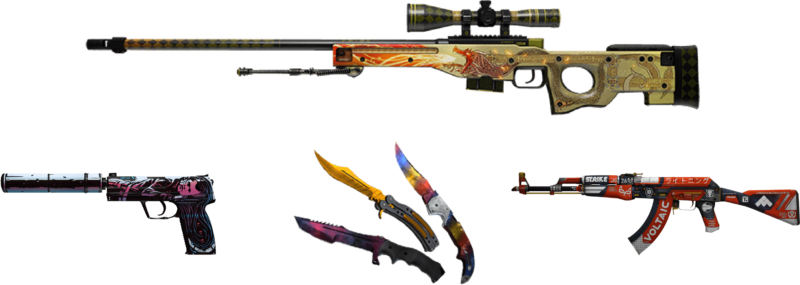
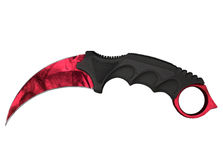
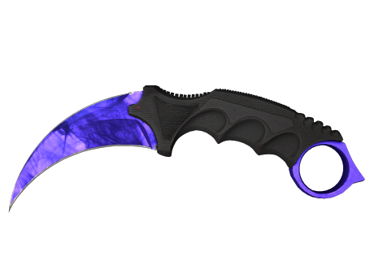
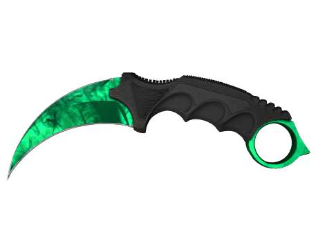
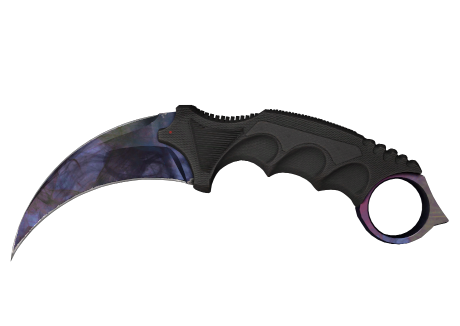

Counter-Strike 2 has awesome skins designs!
There are many different skins available for Counter Strike 2.
They also have many different extreme price points, from as low as one dollar
to over a million dollars.

Karambit Doppler Special Phases

The color scheme of the skin includes various shades of red
creating gradient transitions. The design of the skin
resembles the texture of the ruby.

The color scheme of the skin includes various shades of blue
creating gradient transitions. The design of the skin
resembles the texture of the sapphire.

The color scheme of the skin includes various shades of green
creating gradient transitions. The design of the skin
resembles the texture of the emerald.

The color scheme of the skin includes various shades of blue,
purple and crimson creating gradient transitions.
Counter-Strike 2 is a solid package in many ways. It's still the
best in its sub-genre and I can see myself playing it for thousands of hours,
as I did with its predecessors.
-Gamereactor UK
Interested in the CS2 market?
Sign up for our newsletter on the latest trends of Counter-Strike 2 skin
prices and game updates!